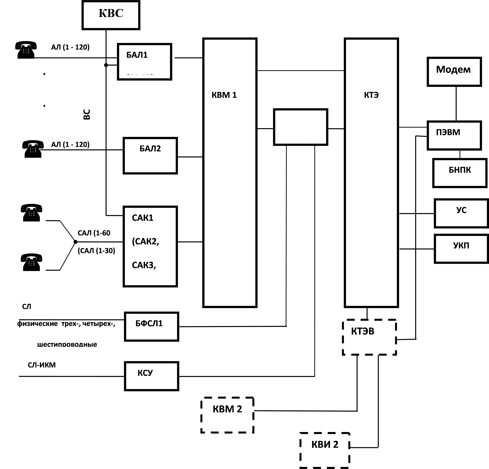

Тема №2. Телефонные аппараты и коммутаторы.
Занятие №2. Автоматическая телефонная станция малой ёмкости.
Учебные вопросы:
Литература:
Введение
Выпуск цифровых автоматических станций АТСЭ Ф начат в 1996 году.
АТС проста в эксплуатации и обслуживании, имеет невысокую стоимость, неприхотлива к параметрам систем передачи - как цифровых, так и аналоговых, линейных сооружений связи - воздушных, коаксиально-кабельных, волоконно-оптических.
Конфигурационная гибкость коммутационной системы позволяет производить наращивание емкости АТС, находящихся в эксплуатации, организовывать удаленный вынос абонентских модулей в месте концентрации нагрузки.
Принцип распределенного программного управления резидентов сканирующих устройств обуславливает высокую живучесть: выход из строя одного или нескольких модулей не приводит к потере функционирования системы в целом.
Предусмотрено резервирование группового оборудования ступеней.
1. Назначение, состав, тактика - технические характеристики АТС ФМ.
1.1 Область применения:
- центральная АТС (ЦС);
- узловая АТС (УС);
- оконечная АТС;
- городская подстанция (ПСК);
- учрежденческо-производственная АТС (УПАТС)
1.2 Емкость:
- до 14700 абонентских линий (АЛ);
- до 2100 соединительных линий (СЛ)
- до 4200 соединительных линий (СЛ) в узловом режиме.
1.3 Нагрузка (t = 72 c, норма потерь 0,5%):
- абонентские линии - 0,15 Эрл;
- соединительные линии - 0,8 Эрл.
1.4 Количество внешних направлений связи - до 100, для ЦС - не менее 128
Максимальное количество линий в направлении - не более 500.
1.5 Типы абонентских установок, включаемых в АТС:
индивидуальные абоненты;
- спаренные абоненты (без взаимной связи);
- прямые абоненты индивидуальные;
- таксофоны местной связи;
- аппаратура вещания;
1.6 Виды ДВО, предоставляемые абонентам:
- тональный набор;
- безусловная переадресация;
- переадресация при занятости;
- переадресация на автоинформатор;
- запрет некоторых видов исходящей связи;
- запрет входящей и исходящей связи кроме экстренных служб;
- исходящая связь по паролю;
- запрет входящей связи;
- передача входящего соединения другому абоненту;
- конференц-связь трех абонентов;
- определение номера вызывающего абонента;
- наведение справки во время разговора;
- уведомление о поступлении нового вызова;
- замена пароля;
- отмена всех услуг;
- отмена всех услуг по паролю.
1.7 Типы СЛ:
- цифровые каналы ИКМ30 (2,048 Мб/c, МККТТ, G703);
- цифровые каналы ИКМ15 (1024 Кбит.с; “Ива”, “Кедр”;
- трехпроводные физические СЛ (ФСЛ);
- трехпроводные ФСЛ от коммутаторов типа МРУ;
- четырехпроводные ФСЛ для систем передачи с ЧРК;
- шестипроводные ФСЛ для систем передачи С ЧРК с ВСК.
1.8 Виды линейной сигнализации:
- 1 ВСК, индуктивный код;
- 1 ВСК, код «Норка»;
- 2 ВСК для раздельных пучков;
- 2 ВСК для универсальных двусторонних СЛ;2ВСК, импульсный пакет;
- в разговорном спектре на частотах 2600, 2100, 1200+1600, 600+750Гц (АДАСЭ, ДАТС и т.д.);
- Е&М;
- ОКС7;
- V5 (ASMI) для включения в качестве концентратора в коммутационную систему SI2000.
1.9 Виды регистровой сигнализации:
- декадный код;
- импульсный чклнок;
- импульсный пакет;
- безынтервальный пакет.
1.10 Наращивание емкости:
- абонентская линия - 4; 8
- цифровая СЛ - 30
- физическая СЛ - 2
1.11 Поддержка нумерации в сети:
- открытая;
- закрытая (2 - 7 знаков).
1.12 Сопротивление шлейфа АЛ - до 3 кОм.
1.13 АОН - безынтервальный пакет.
1.14 Пропускная способность цифрового канала - 64 кбит/с.
1.15 Коды межстанционного обмена ( для ИКМ) - НDВ-3.
1.16 Тип блокиратора спаренных АЛ - диодный.
1.17 Функции процессора технической эксплуатации и обслуживания:
- управление абонентскими характеристиками;
- управление маршрутизацией;
- управление автоответчиком (700 Гц);
- аварийная сигнализация;
- диагностика оборудования АТС и АЛ;
- учет и контроль нагрузки;
- АПУС (исходящий трафик, абоненты А,В, дата и время окончания разговора,
- длительность соединения в тарификационных импульсах номинальной длительностью 4,096 с , тип соединения);
- передача данных для пульта ЦТЭ.
1.18 Интерфейс обмена с центром технической эксплуатации:
- модемная связь.
1.19 Система учета разговоров и учета стоимости разговоров (СИС) содержит следующие данные:
- номер и категорию вызывающего абонента;
- номер вызываемого абонента;
- длительность установленного соединения в тарификационных импульсах номинальной длительностью 4,096 с или 1,0 с;
- дату и время окончания разговора.
1.20 Погрешность определения продолжительности разговора не более +-4 с или +-1 с.
1.21 Напряжение электропитания - 54 * 72В.
1.22 Удельная потребляемая мощность ЧНН - до 1 Вт/номер
1.23 Климатические условия эксплуатации:
- нормальные
- температура окружающей среды от 15 до 35*С; влажность от 45 до 85%;
- повышенные - температура от 5 до 40*С; влажность до 95%.
1.24 Удельная площадь ЛА3 - 0,005 м2 /номер
1.25 Удельная масса - 0,5 кг/номер
1.26 Габаритные размеры исполнений статива - 2600 х 886 х 410
- 2090 х 886 х 410
- 1370 х 886 х 410
2. Структурная схема АТС ФМ
2.1 Описание структурной схемы АТС
АТСЭ Ф - это комплекс цифрового коммутационного оборудования, основу которого составляет коммутационная система с распределенным полем и децентрализованным управлением (модульный принцип построения с многоступенчатой иерархией). АТС малой емкости не требуют постоянного присутствия обслуживающего персонала.
В состав АТС входят следующие основные блоки:
- БАЛ1, БАЛ2, БАЛ3 - блок абонентских линий;
- САК1,САК2, САК3, САК4 - блок спаренных абонентских линий;
- БФСЛ1 - блок физических соединительных линий;
- КВМ - кассета модульных процессоров;
- КВИ - кассета индексных процессоров;
- КТЭ,КТЭВ,КТЭК - кассеты процессоров технической эксплуатации;
- КСУ, КСУ1, КСУ3 - кассета соединительных линий;
- КВС - кассета вызывного сигнала;
- КВК - коммутатор временной комбинированный;
- УС - устройство сигнализации;
- УКП - устройство контроля питания;
- БНПК - блок непрерывного питания комбинированный.
Функциональные схемы АТС в соответствии с рисунками 2.1.1, 2.1.2. Функциональные схемы АТС в соответствии с рисунками 2.1.1, 2.1.2.
Абонентские линии с индивидуальных телефонов поступают в блок БАЛ1 (БАЛ2), где происходит аналого-цифровое и цифро-аналоговое преобразование речевого сигнала, разделение трактов приема и передачи, определение состояния шлейфа - точка сканирования (ТС) абонента. В блоке БАЛ1 (БАЛ2) осуществляется подключение измерителя на АЛ и подача вызывного сигнала (ВС) на АЛ. Блоки БАЛ1 и БАЛ2 обслуживают 120 абонентов. Блок БАЛ3 обслуживает 240 абонентов.
Абонентские линии от спаренных телефонов с выхода блокиратора поступают в блок САК1(САК3) или САК2(САК4), которые осуществляют те же функции, что и блок БАЛ1(БАЛ2), БАЛ3 только по отношению к спаренным АЛ (САЛ). Блок САК1 обслуживает 60 САЛ (120 спаренных абонентов) и 30 индивидуальных, блок САК2– 30 САЛ (60 спаренных абонентов) и 60 индивидуальных, блок САК3– 60 САЛ (120 спаренных абонентов), блок САК4 (8б2.190.022-31)– 30 САЛ (60 спаренных абонентов) и 30 индивидуальных, блок САК4 (СУИК.687271.024) – 30 САЛ (60 спаренных абонентов) и 150 индивидуальных.
Генерирование вызывного сигнала и питание абонентских линий осуществляется кассетой КВС. Блок БАЛ3 не требует кассеты КВС, т.к вызывной сигнал на абонентские комплекты подается из ТЭЗа БВС1, установленного в блоке БАЛ3.
Речевая информация из блоков БАЛ1-БАЛ3 и САК1-САК4, а также состояние точек сканирования в цифровом виде поступают в кассету КВМ, которая осуществляет коммутацию разговорного тракта пары абонентов, ведет обработку информации управления и сканирования, формирует тракты связи с кассетой КВИ (в дальнейшем - индексный процессор).
Кассета КВИ обеспечивают связь между абонентами своей АТС, связь по физическим линиям (через блок БФСЛ1) и цифровым СЛ (через кассету КСУ), собирает и передает статистическую информацию о количестве и продолжительности разговоров в кассеты КТЭ(КТЭВ).
Вся статистическая информация от блоков АТС, а также информация о неисправностях в системе поступает на кассеты КТЭ( КТЭВ). Данные кассеты не участвуют в обработке вызова. Они обеспечивают процесс эксплуатации и технического обслуживания АТС а также функционирование системы синхронизации АТС. Для обеспечения необходимой надежности системы синхронизации применяется 100% резервирование (по принципу “горячий” резерв).
Переход на резерв происходит автоматически при появлении неисправности или вручную - по желанию оператора. Кассета КТЭВ применяется при необходимости каскадирования кассеты технической эксплуатации КТЭ на АТС большой емкости.
Для расширения возможности проектирования АТС малой емкости до 720 номеров имеются комбинированные кассеты КВК и КТЭК. В кассете КВК собран индексный процес-сор и часть кассеты КСУ. Кассета КТЭК включает в себя часть кассеты КТЭ и часть кассеты КВС.
На структурной схеме АТС показаны дополнительные возможности использования АТС. Так, имеется возможность подключения к кассетам технической эксплуатации ПЭВМ и модема для связи с АТС из удаленного центра технической эксплуатации (ЦТЭ).
К кассетам технической эксплуатации подключается устройство сигнализации , которое с помощью световой и звуковой сигнализации информирует о состоянии оборудования АТС.
Ввод аварийной информации от внешней системы электропитания осуществляется через устройство контроля питания УКП, которое контролирует электропитание АТС при изменении напряжения промышленной сети, УГП и аккумуляторных батарей, а также сохраняет аккумуляторные батареи от чрезмерного разряда.
Все аварийные сообщения по желанию оператора могут быть выведены на экран монитора ПЭВМ.
Блок непрерывного питания БНПК обеспечивает электропитание процессора ПЭВМ при пропадании промышленной сети.
Система электропитания ПС-60 обеспечивает стабилизированное напряжение электропитания АТС. При необходимости в ПС-60 могут быть установлены аккумуляторные батареи емкостью до 100 А?ч.
Имеется возможность подключения к АТС канала вещания, таксофонов, блока внешних сенсоров (пожар, вскрытие помещения и т.д).
В блоке КСУ имеется возможность передачи сигналов интерфейса RS-232 в одном выделенном канале ИКМ-потока.
Работа оператора с ПЭВМ производится в операционной системе WINDOWS в соответствии с описанием "Автоматизированного рабочего места", поставляемого с АТС.
Рисунок 2.1.1 – Структурная схема АТСЭ Ф емкостью более 720 АЛ

Рисунок 2.1.2 - Структурная схема АТСЭ Ф емкостью менее 720 АЛ

Рисунок 2.1.3 – Структурная схема АТСЭ Ф
2.2 Описание функциональной схемы АТС
Функциональная схема АТС в соответствии с рисунком 2.4.1.
Связь между процессорами всех блоков АТС осуществляется по шине межпроцессорного обмена (МПО). Функционирование блока КТЭ обеспечивает микропроцессор, установленный на ТЭЗе ЦПМ - центральный процессор модернизированный. В блоке КТЭ информацию о состоянии оборудования собирает мультиплексор аварийной сигнализации - ТЭЗ МАС. В кассете КТЭ установлен ТЭЗ ОСГ - общестанционный генератор, который вырабатывает основную тактовую частоту 16384 кГц, необходимую для синхронизации работы всех блоков АТС.
В состав кассеты КВМ входят четыре модульных коммутатора (модуля) на 512 точек коммутации без резерва. В состав кассеты КВИ входят два индексных коммутатора на 1024 точки коммутации со 100% резервом.
ТЭЗы СЛ кассеты КСУ осуществляют связь с цифровыми соединительными линиями СЛ-ИКМ по приему и передаче. ТЭЗы МСП кассеты КСУ - многочастотные приемники – предназначены для обработки информации по СЛ, передаваемой частотным способом и обработки частотного набора номера с АЛ.
ТЭЗы АКС кассеты КСУ формируют ствол акустики, содержащий всю необходимую базу акустических сигналов и фраз автоинформатора.
Связь по трехпроводным физическим соединительным линиям в блоке БФСЛ1 осуществляют ТЭЗы ИК, ВК - исходящие и входящие комплекты трехпроводные. При работе по четырех и шестипроводным физическим линиям в блок БФСЛ1 устанавливаются ТЭЗы ДК6Ц.
В блоках САК1, САК2 опрос точки сканирования спаренных абонентов осуществляется подачей сигнала переполюсовки ± 30В с ТЭЗа БП30А.
Связь между блоками АТС производится парафазными дифференциальными сигналами, которые преобразуются в ТТЛ-уровни, необходимые для работы логических ТЭЗов. Преобразование осуществляется в ТЭЗах ПВ, входящих в состав блоков АТС. Обратное преобразование осуществляется в ТЭЗах ПИ.

2.3 Структура внутреннего ИКМ-потока
Передача информации между блоками АТС ведется ИКМ-потоками. Минимальной функциональной единицей ИКМ-потока является канальный интервал (КИ), содержащий последовательный байт информации. 32 последовательных канальных интервала образуют цикл (Ц) ИКМ-потока. Два канальных интервала имеют жесткое позиционное и соответственно функциональное закрепление. Нулевой канальный интервал каждого цикла предназначен для синхронизации и содержит определенную константу, называемую синхромаркером цикла. По этому синхромаркеру приемник ИКМ-потока устанавливает соответствие между передаваемыми и принимаемыми номерами канальных интервалов. 16 канальный интервал предназначен для передачи управляющей информации, например, в нашем случае в 16 канальном интервале передается информация о состоянии точек сканирования абонентских линий, подача абонентам вызывного сигнала (ВС), результаты измерений параметров АЛ. Все остальные канальные интервалы являются информационными, т.е. в каждом из них передается речевая информация от какого-то абонента или какому-то абоненту.
Структура ИКМ-потока в соответствии с рисунком 2.5.1.
В блоке БАЛ1(БАЛ2) за каждым канальным интервалом закреплен определенный абонент. Для синхронизации управляющей информации существует сверхцикл, состоящий из 16 последовательных циклов. В каждом цикле 16 канальный интервал отвечает за свою часть управляющей информации. Например, в блоке БАЛ в младшей тетраде КИ16 0Ц передается константа “5” или “D”, которая говорит о наличии синхронизации блока БАЛ1(БАЛ2). В младшем бите тетрады КИ16 0Ц передается ТС первого абонента. В 0 и 4 битах КИ16 1Ц передается точка сканирования абонентов 2 и 3 соответственно и т.д. в соответствии с рисунком 2.5.2.
Для синхронизации циклов в сверхцикле существует синхромаркер сверхцикла, который расположен в нулевом канальном интервале нулевого цикла и отличается от синхромаркера цикла. Таким образом, байт речевой информации поступает раз в 125 мкс.
Передача информации между блоками АТС ведется по трактам, имеющим структуру ИКМ-30, описанную выше. В зависимости от направления передачи информации: из БАЛ1(БАЛ2) или в БАЛ1(БАЛ2), тракт может быть исходящим (ТГИ - тракт групповой исходящий) или входящим (ТГВ - тракт групповой входящий).


Рисунок 2.5.1 - Структура сверхцикла цифрового тракта

Рисунок 2.5.2
При передаче информации из М в блок БАЛ1(БАЛ2) в нулевом и четвертом битах передается сигнал подачи ВС на АК. Содержание КИ16 для спаренных абонентов в соответствии с рисунком 2.5.3.

Рисунок 2.5.3
Обработка изменений сигналов управления в коммутационной системе ведется с периодом 16 мс. За этот период процессор должен обслужить заданную нагрузку - 512 точек коммутации.
АТСЭ Ф работает по принципу временной коммутации. Поскольку за каждым абонентом жестко закреплен определенный номер КИ в определенном тракте, то для осуществления связи двух абонентов необходимо выровнять их временные позиции (ВП).
Например, если необходимо выполнить коммутацию третьего канала второго ствола и седьмого канала пятого ствола, необходимо третий байт передачи второго ствола записать в седьмую ВП приема пятого ствола, а седьмой байт передачи пятого ствола - в третью ВП приема второго ствола. Выполняется эта процедура в универсальном временном коммутаторе - ТЭЗе УВК-М.

Рисунок 2.6.1 - Схема соединения абонентов в разных модулях
2.4. КОНСТРУКЦИЯ АТСЭ Ф
Электронное оборудование и кабельное хозяйство АТС размещается на стативных рядах, соединенных между собой и вводно-коммутационными устройствами (ВКУ) с помощью кабельростов, и подразделяется на четыре конструктивных уровня:
- стативный ряд;
- статив;
- блок;
- ТЭЗ.
Стативный ряд в зависимости от емкости АТС и высоты помещения включает в себя до четырех стативов с возможной высотой 2600 мм, 2100 мм, 1300 мм.
При монтаже кабельроста к торцу статива или ряда возможно дополнительное закрепление статива или ряда к параллельной им стене комплектом крепежных деталей.
Пример расположения или крепления стативного ряда или статива к стенам помещения в соответствии с рисунком 9.2.
Конструкция регулируемых по высоте ножек также позволяет закрепить основание статива или ряда к полу помещения, обеспечив дополнительную устойчивость конструкции.
Статив состоит из верхней и нижней секций, в каждую из которых может быть установлено до четырех блоков.
Несущей конструкцией стативов являются стойки, свинчиваемые с верхними и нижними рамами в единый каркас.
От внешней среды внутреннее пространство статива отделено навешиваемыми съемными боковыми стенками и двухстворчатыми дверями.
При сборке стативов в ряд смежные боковые стенки не устанавливаются, а открытое пространство используется для прокладки кабелей межстативных соединений.
Внутреннее пространство статива разделено на 4 секции по 2 блока в каждой тремя дефлекторами (воздухоотражателями), создающими условия для равномерного теплоотвода от блоков и ТЭЗов по всей высоте статива. Промежутки, занимаемые дефлекторами, используются для горизонтальной прокладки кабелей внутри статива и перехода на соседние стативы.
Блоки представляют собой жесткий конструктив, объединяющий между собой отдельные ТЭЗы в функционально законченные модули. В одном блоке может быть размещено до 34 ТЭЗов, имеющих размеры 15 х 233 х 220 мм. В зависимости от конструкции ТЭЗы могут иметь ширину передней панели 14, 21, 29, 37, 44 мм и устанавливаться в направляющие, размещаемые в блоке с шагом 7,5 мм.
ТЭЗы представляют собой двухстороннюю печатную плату, размером 233 х 220 мм, соединяющую в себе функции жесткой несущей конструкции и электрического монтажа расположенных на ней радиоэлементов, соединителей, органов индикации и управления, лицевой панели.
Объединение размещенных на стативных рядах блоков в единую АТС выполняется кабелями, укладываемыми внутри вертикальных несущих стоек каркаса и в горизонтальных кабельных каналах, организуемых в местах установки дефлекторов.
Электропитание АТС распределяется по стативам посредством пакетов стативных шин, соединяемых с кассетами гибкими перемычками.
Адресация рядов стативов блоков указывается в рабочем проекте на АТС.
2.5. ТЕХНИЧЕСКОЕ ОПИСАНИЕ ФУНКЦИОНАЛЬНЫХ БЛОКОВ АТСЭ Ф
КТЭВ - Кассета технической эксплуатации ведомая
В состав кассеты КТЭВ входят ТЭЗы размножения сигналов синхронизации ПИ-2шт, два комплекта ТЭЗов технической эксплуатации: ЦПМ, ИЗМ, МАС, а также два источника электропитания параллельной работы БПП и два блока ввода БВ.
Кассета КТЭВ является функциональным блоком АТС, обеспечивающим размножение сигналов синхронизации и функционирование системы технической эксплуатации. Используется как дополнение к кассете КТЭ. Имеет возможность каскадного наращивания.
КТЭ - Кассета технической эксплуатации
В состав кассеты КТЭ входят ТЭЗы системы синхронизации: ОСГ - 2шт, ПИ - 2шт; два комплекта ТЭЗов технической эксплуатации: ЦПМ, ИЗМ, МАС, а также два источника электропитания параллельной работы БПП и один блок ввода БВ.
Кассета КТЭ является функциональным блоком АТС, обеспечивающим функционирование системы синхронизации и системы технической эксплуатации.
КТЭК - Кассета технической эксплуатации комбинированная
В состав кассеты КТЭК входят ТЭЗы системы синхронизации: ОСГ-2шт, ПИ-2шт; комплект ТЭЗов технической эксплуатации: ЦПМ, ИЗМ, МАС; основной и резервный ТЭЗ БВС, ТЭЗ БПУ для электропитания ТЭЗов БВС; два источника электропитания параллельной работы БПП и два блока ввода БВ.
Кассета КТЭК является функциональным блоком АТС, обеспечивающим функционирование системы синхронизации, системы технической эксплуатации и генерирование вызывного сигнала. Используется для построения станций малой емкости (до 720 номеров) совместно с кассетами КВК и БАЛ1.
КВК, КВК1 - Коммутатор временной комбинированный
В состав блоков КВК, КВК1 входят индексный коммутатор на 1024 точки коммутации со 100%-м резервом и до восьми ТЭЗов ствольно-ориентированных устройств (СЛ, МСП) с обслуживающим их ТЭЗом ЦПМ, а также два источника электропитания параллельной работы БПП. В блок КВК дополнительно устанавливаются два ТЭЗа АКС. Индексный коммутатор блоков КВК, КВК1 состоит из следующих ТЭЗов:
ЦПМ - 2шт, УВК-И - 2шт, ПИ - 2шт, ПВ - 2шт.
Блоки КВК, КВК1 являются функциональными блоками АТС, обеспечивающими функционирование индексного коммутатора и ствольно-ориентированных устройств (СУ).
КВИ - Коммутатор временной индексный
В состав блока КВИ входят два индексных коммутатора на 1024 точки коммутации со 100% резервом. В состав блока входят следующие ТЭЗы:
ЦПМ - 2шт, УВК-И - 2шт, ПИ - 2шт, ПВ - 2шт и два источника электропитания БПУ.
Блок КВИ является функциональным блоком АТС, обеспечивающим функционирование индексных коммутаторов.
Блок КВИ является функциональным блоком АТС, обеспечивающим функционирование индексных коммутаторов.
В состав блока КВМ входят четыре модульных коммутатора на 512 точек коммутации без резерва, которые собраны на следующих ТЭЗах:
ЦПМ - 4шт, УВК-М - 4шт, ПИ - 2шт, ПВ -2шт, два источника электропитания БПУ и блок ввода БВ.
Блок КВМ является функциональным блоком АТС, обеспечивающим функционирование модульных коммутаторов.
БАЛ1 - Блок абонентских линий
В состав блока БАЛ1 входят следующие ТЭЗы:
АК4, ФСУ и блок электропитания БПУ.
Для включения в АТС двухпроводных аналоговых АЛ индивидуальных абонентов используют ТЭЗы АК4. Один ТЭЗ содержит 4 абонентских комплекта для подключения 4 АЛ. Каждый АК осуществляет следующие функции:
- электропитание микрофона телефонного аппарата абонента;
- защиту от перенапряжения на АЛ;
- посылку индукторного вызова абоненту от ТЭЗ БВС;
- измерение параметров АЛ путем подключения АЛ к ТЭЗ ИЗМ блока КТЭ;
- переход от двухпроводной линии к четырехпроводной схеме разговорного тракта;
- аналого-цифровое преобразование сигнала, принимаемого с АЛ и цифро-аналоговое преобразование сигнала, передаваемого в АЛ (кодирование и декодирование).
БАЛ3 - Блок абонентских линий
Конструктивно один блок БАЛ3 содержит блок питания БПУ, блок вызывного сигнала БВС1, а также 30 ТЭЗов АК8 или АК8С и один ТЭЗ ФС8 и позволяет включить до 240 АЛ.
Для включения в АТС двухпроводных аналоговых АЛ индивидуальных абонентов используют ТЭЗы АК8 или АК8С. Один ТЭЗ содержит 8 абонентских комплектов для подключения 8 АЛ. Каждый АК осуществляет следующие функции:
- электропитание микрофона телефонного аппарата абонента;
- защиту от перенапряжения на АЛ;
- посылку индукторного вызова абоненту от ТЭЗ БВС1;
- измерение параметров АЛ;
- измерение параметров АК;
- переход от двухпроводной линии к четырехпроводной схеме разговорного тракта;
- аналого-цифровое преобразование сигнала, принимаемого с АЛ и цифро-аналоговое преобразование сигнала, передаваемого в АЛ (кодирование и декодирование).
САК1, САК2 - Блок спаренных абонентских комплектов
В состав блоков САК1,САК2 входят следующие ТЭЗы:
АК4, САК, ФСУ и блоки электропитания БП30А, БПУ.
Расположение ТЭЗ в блоках САК1, САК2 указано в приложении А.
Для подключения к АТС аналоговых двухпроводных линий от спаренных абонентов, разделенных через диодно-транзисторные приставки (блокираторы), используются ТЭЗы САК. Каждый ТЭЗ САК позволяет подключать 15 спаренных АЛ (30 спаренных абонентов) и выполняет следующие функции:
- подачу сигнала переполюсовки в спаренные абонентские линии (САЛ);
- подачу вызывного сигнала каждому из спаренных абонентов из ТЭЗ БВС;
- проключение любого из спаренных абонентов к абонентскому комплекту.
Режим переполюсовки для САЛ обеспечивает блок БП30А, вырабатывающий напряжения ± 30В.
САК3 - Блок спаренных абонентских комплектов
Конструктивно блок САК3 содержит 4 ТЭЗа САК16, 8 ТЭЗов АК8( АК8С) для САЛ, 15 ТЭЗов АК8 (АК8С) для 120 АЛ индивидуальных абонентов, один блок БП30А, один БВС1, один ТЭЗ ФС8 и позволяет подключить до 60 САЛ (120 спаренных абонентов) и до 120 индивидуальных АЛ.
Для подключения к АТС аналоговых двухпроводных линий от спаренных абонентов, разделенных через диодно-транзисторные приставки (блокираторы), используются ТЭЗы САК16. Каждый ТЭЗ САК16 позволяет подключать 16 спаренных АЛ (32 спаренных абонента) и выполняет следующие функции:
- подачу сигнала переполюсовки в спаренные абонентские линии (САЛ);
- подачу вызывного сигнала каждому из спаренных абонентов из ТЭЗ БВС1;
- проключение любого из спаренных абонентов к абонентскому комплекту.
САК4 - Блок спаренных абонентских комплектов
Конструктивно блок САК4 содержит 2 ТЭЗа САК16, 4 ТЭЗа АК8С (АК8) для САЛ, 19 ТЭЗов АК8 для 150 АЛ индивидуальных абонентов, один блок БП30А, один БВС1, один ТЭЗ ФС8 и позволяет подключить до 30 САЛ (60 спаренных абонентов) и до 150 индивидуальных АЛ.
Для подключения к АТС аналоговых двухпроводных линий от спаренных абонентов, разделенных через диодно-транзисторные приставки (блокираторы), используются ТЭЗы САК16. Каждый ТЭЗ САК16 позволяет подключать 16 спаренных АЛ (32 спаренных абонента) и выполняет следующие функции:
- подачу сигнала переполюсовки в спаренные абонентские линии (САЛ);
- подачу вызывного сигнала каждому из спаренных абонентов из ТЭЗ БВС1 (сигнал “VSS”);
- проключение любого из спаренных абонентов к абонентскому комплекту.
БФСЛ1 - Блоки связи по физическим соединительным линиям
В состав блока БФСЛ1 входят следующие ТЭЗы:
ИК, ВК, ДК6, ФСУ и блок электропитания БПУ.
ТЭЗы ИК, ВК осуществляют связь по физическим трехпроводным СЛ с батарейным способом передачи сигналов взаимодействия. ТЭЗ ДК6 - шестипроводный физический комплект с передачей сигналов взаимодействия частотными посылками.
Блок БФСЛ1 предназначен для обеспечения связи с другими АТС по физическим линиям. Каждый из ТЭЗов содержит два однотипных комплекта, выполняющих следующие функции:
- переход от двухпроводного (со стороны СЛ) к четырехпроводному (со стороны АТС) разговорному тракту;
- преобразование аналогового сигнала СЛ в цифровую форму (кодирование и декодирование);
- выделение сигналов управления взаимодействия (СУВ), приходящих по СЛ;
- формирование СУВ для передачи в СЛ.
КСУ, КСУ1 - Кассета ствольных устройств
В состав кассеты КСУ входят следующие ТЭЗы:
СЛ, МСП, АКС - в любой комбинации, общим количеством до 16 штук, ЦПМ - 1шт. и два блока электропитания параллельной работы - БПП.
В состав кассеты КСУ1 входят следующие ТЭЗы:
СЛ60, И15К, И15И, МП60 в любой комбинации, а также на определенные места устанавливаются ТЭЗы АС60 или АКС.
Кассеты КСУ, КСУ1 являются функциональными блоками АТС, обеспечивающими функционирование ствольно-ориентированных устройств (СУ), таких как СЛ, МСП, АКС, СЛ60, МП60.
КСУ3 - Кассета ствольных устройств
В состав кассеты КСУ3 входят следующие ТЭЗы:
СЛ60, МП60, СС7, БСЛ30, БСЛ15 - в любой комбинации, общим количеством до 16 штук, ТЭЗ ЦП – 2 шт. и два блока электропитания параллельной работы - БПП.
Кассета КСУ3 является функциональным блоком АТС, обеспечивающим функционирование ствольно-ориентированных устройств (СУ), таких как СЛ60, МП60, СС7, БСЛ30, БСЛ15, АС60.
КВС - Кассета вызывного сигнала
В состав кассеты КВС входят следующие ТЭЗы:
БВС- 6 шт, ПИ-1 шт, БВ – 3 шт и два блока электропитания параллельной работы – БПП.
Кассета КВС является функциональным блоком АТС, обеспечивающим генерирование вызывных сигналов и питание абонентских линий для абонентских комплектов в блоках БАЛ1.
ПК - Панель кроссовая
Кассета ПК предназначена для перераспределения и кроссировки трактов, которые задаются накруткой под каждую индивидуальную станцию.
На кассету ПК устанавливаются только двухрядные разъемы(вилка СНО60-18/70*14В-1), максимальное количество которых может быть 80.
КБВ - Кассета блоков ввода
В состав кассеты КБВ входят до шести блоков ввода БВ.
СЛС9 - Кассета буфер соединительных линий и стык RS-232
СЛС1 - Кассета буфер соединительных линий и стык RS-232
В состав кассеты СЛС1 входят следующие ТЭЗы:
Один ТЭЗ СЛС и малогабаритный блок электропитания БПСЛС1.
МС1 - Кассета буфер мультиплексора стыка RS-232
В состав кассеты МС1 входят следующие ТЭЗы:
ПРП - Панель распределения питания
Панель ПРП предназначена для распределения тока питания на блоки ввода АТС. В состав панели может входить до 24 автоматов ВА-101, через которые питание минус 60В подается на один или несколько блоков ввода.
БАФЛ - Блок абонентских и физических соединительных линий
Блок БАФЛ является комбинированным блоком, выполняющим функции блока БАЛ и блока БФСЛ. В состав блока БАФЛ входят следующие ТЭЗы:
АК4, ДК6, ФСУ и блок электропитания БПУ.
Структурная схема блока БАФЛ приведена на рисунке 3.24.1.
Для включения в АТС двухпроводных аналоговых АЛ индивидуальных абонентов используют ТЭЗы АК4. Один ТЭЗ содержит 4 абонентских комплекта для подключения 4 АЛ. Каждый АК осуществляет следующие функции:
- электропитание микрофона телефонного аппарата абонента;
- защиту от перенапряжения на АЛ;
- посылку индукторного вызова абоненту от ТЭЗ БВС;
- измерение параметров АЛ путем подключения АЛ к ТЭЗ ИЗМ1 блока КТЭ;
- переход от двухпроводной линии к четырехпроводной схеме разговорного тракта;
- аналого-цифровое преобразование сигнала, принимаемого с АЛ и цифро-аналоговое преобразование сигнала, передаваемого в АЛ (кодирование и декодирование).
БФСЛ2 - Блоки связи по физическим соединительным линиям
В состав блока БФСЛ2 входят следующие ТЭЗы: ИК, ВК, ДК6, БФЛ и блок электропитания БПУ.
ТЭЗы ИК, ВК осуществляют связь по физическим трехпроводным СЛ с батарейным способом передачи сигналов взаимодействия. ТЭЗ ДК6 - шестипроводный физический комплект с передачей сигналов взаимодействия частотными посылками.
Блок БФСЛ2 предназначен для обеспечения связи с другими АТС по физическим линиям. Каждый из ТЭЗов содержит два однотипных комплекта, выполняющих следующие функции:
- переход от двухпроводного (со стороны СЛ) к четырехпроводному (со стороны АТС) разговорному тракту;
- преобразование аналогового сигнала СЛ в цифровую форму (кодирование и декодирование);
- выделение сигналов управления взаимодействия (СУВ), приходящих по СЛ;
- формирование СУВ для передачи в СЛ.
ТЭЗ БПУ - Блок питания универсальный
ТЭЗ БПУ является универсальным источником вторичного электропитания и представляет собой импульсный многоканальный преобразователь напряжения с необходимыми схемами контроля, индикации и сигнализации. Он вырабатывает все необходимые напряжения из входного напряжения электропитания АТС.
Мощность БПУ позволяет обеспечить электропитание любого блока АТС.
Напряжение электропитания ТЭЗ: минус 60В.
ТЭЗ БПУ состоит из следующих основных узлов:
- Ф - входной фильтр;
- ССП - схема служебного питания;
- И - инвертор;
- Д1-Д4 - демодуляторы;
- Ф1 -Ф3 - фильтры;
- С1-С2 - стабилизаторы;
- СКИ - схема контроля и индикации;
- СУ - схема управления;
- СОСН - схема обратной связи по напряжению;
- СОСТ - схема обратной связи по току.
Основные технические данные ТЭЗ БПУ приведены в таблице 4.15.1.
Таблица 4.15.1
| Параметр | Значение | Примечание |
|---|---|---|
| Входное напряжение, В | 50 - 80 | |
| Выходное напряжение/макс. ток | +5В / 12А | цифровое |
| +5В / 1А | аналоговое | |
| -5В / 1А | аналоговое | |
| +15В / 3А | ||
| +12В / 0,5А | ||
| -12В / 0,5А |
3. Программное обеспечение АТС ФМ
По функциональному назначению ПО подразделяется на:
- тестовое;
- сканирующее (резиденты центральных устройств);
- сервисное (обрабатывающие программы);
- инструментальное.
Структура ПО АТС приведена на рисунке 3.1.
Тестовые программные средства имеют несколько разновидностей. Экспресс-диагностика наиболее удобна в эксплуатации для оперативного устранения неисправностей в условиях, когда не имеется возможности применить контрольно-измерительную аппаратуру, ПЭВМ.
Выполнение тестов ведется в автоматическом режиме и завершается определенным кодом, указывающим на неисправный ТЭЗ, либо на цепочку предположительно неисправных ТЭЗ.
Тест-монитор применим в условиях промышленной отладки или стационарного ремонта центральных устройств. Структура тестов аналогична экспресс-диагностике с той лишь разницей, что существует дополнительная возможность зацикливания интересующих ситуаций и изменения параметров, алгоритмов в драйверах отладочных процедур. Это позволяет вести локализацию неисправности не только на уровне ТЭЗ, но и выявлять неисправные элементы.
Главным недостатком вышеупомянутых программных средств является то, что их выполнение прерывает режим сканирования тестируемых центральных устройств. В связи с этим в резидентные программы сканирования введены встроенные процедуры, позволяющие локализовать неисправности в каналах связи. Главным критерием на абонентской ступени является занятие АЛ без набора номера втечение двух минут. Что касается соединительных линий, то здесь алгоритм моделирует работу реле непроизводительного занятия линии и при распознавании такого программного события посылает по этой линии отбой с фиксацией этой ситуации (номер СЛ, время) в буфер аварийных сообщений.
Все центральные устройства (ЦУ) связаны с пультом оператора (ПЭВМ) через интерфейс стыка RS-232, работающего со скоростью 9600 Бод. Структура обмена по стыку - директивный протокол с побайтным квитированием. Инициатором обмена всегда является ПЭВМ оператора.

Формат директив:
XX NNNN KKKK CC, где XX - директива; NNNN - начальный адрес; KKKK - конечный адрес; CC - константа.
Директива указывает, что должен выполнить процессор ЦУ. Это может быть запись, чтение данных (одиночного байта) в память ЦПУ, пуск программы и т.п.
Сканирующее ПО или резиденты центральных устройств относится к категории программ реального времени. Упрощенно это означает, что за определенный интервал времени, в данном случае - за цикл сканирования (SCRW), ЦУ должно обслужить заданную нагрузку - 1024 точки коммутации. Цикл сканирования коммутационной системы составляет 16 мс. Удельное время обработки одной точки, таким образом, не должно превышать величину 62 мкс. За такой интервал времени микропроцессоры различных систем могут выполнить - от 10 до 40 команд, тогда как некоторые коммутационные задачи (исходное состояние, набор номера, проверка абонента В, отбой) включают объемы порядка нескольких сотен команд.
Учитывая это обстоятельство, в алгоритмах сканирования системы введены специальные процедуры обработки, организации очередей и т.п., позволяющие сохранить нормальное функционирование АТС даже в часы наибольшей нагрузки (ЧНН).
Сбор информации интерфейсного обмена, автоматизированного повременного учета стоимости, статистики ведет кассета КТЭ. Ее основное назначение - формирование базы данных на основе этой информации, отслеживание параметров ЦУ, обработка, учет и контроль аварийной и диагностической информации АТС, поддержка интерфейса обмена с центром технической эксплуатации по выделенному каналу связи и пультом оператора ПЭВМ. В случае отказа КТЭ коммутационная система продолжает функционирование, но сбор информации прекратится. Прервется также связь оператора и ЦТЭ. Для такого случая предусмотрены стыки ЦУ с пультом оператора через интерфейс RS-232.
К сервисному ПО относятся программы пульта оператора (ATSF.xxx), программы обработки базы данных и АПУС (APUS.EXE).
Сервисное ПО в отличие от сканирующего и диагностического относится к категории программ нереального времени и составляется с применением языков высокого уровня.
Инструментальная математика подразумевает класс задач, которые «помогают» разобраться с сутью происходящих в коммутационной системе процессов (физических явлений) и представляют собой набор программ отладчиков, трассировщиков и моделей узлов коммутационной системы, например, таких как МСП. Такие программы могут быть встроены в сканирующие, диагностические, реже - в сервисные программные средства.